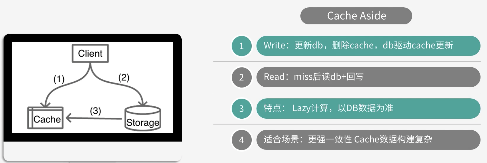
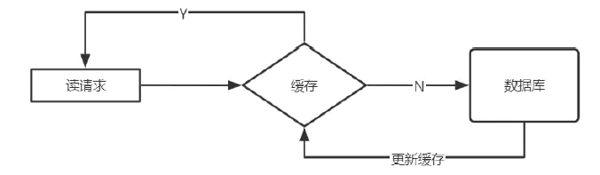
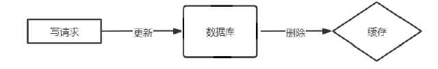
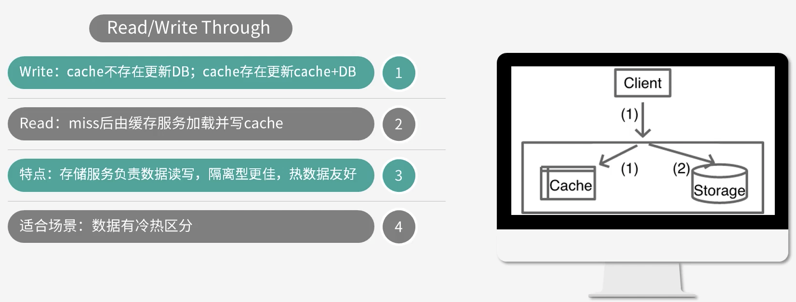
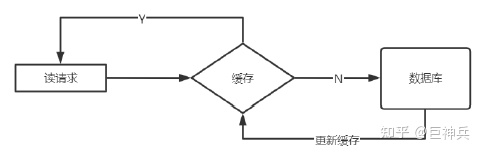
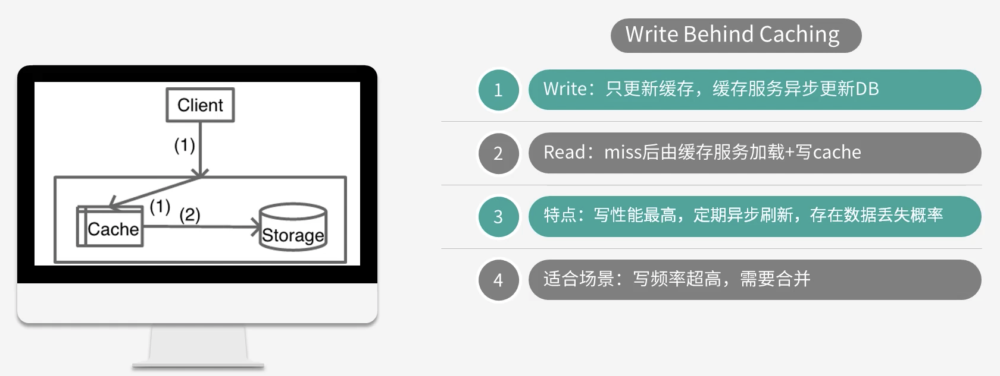

客户端先读 cache，如果 cache 没有，则读 DB ，同时将从 DB中读取的数据回写到 cache。

由客户端先更新 DB ，然后直接将 key 从 Cache 中删除，由 DB 来驱动缓存数据的更新。
这种模式的特点是，业务端处理所有数据访问细节，同时利用 Lazy 计算的思想，更新 DB 后，直接删除 Cache 并通过 DB 更新，确保数据以 DB 结果为准，可以大幅降低 Cache 和 DB 中数据不一致的概率。
如微博发展初期，不少业务采用这种模式，这些缓存数据需要通过多个原始数据进行计算后设置。在部分数据变更后，直接删除缓存。同时，使用一个Trigger 组件，实时读取 DB 的变更日志，然后重新计算并更新缓存，如果读缓存的时候，Trigger 还没写入 cache，则由调用方自行到 DB 加载计算并写入 cache。
由于更新操作会删除缓存中的数据，所以如果存在某些热点 key 被删除，则会导致瞬时大量请求穿透到 DB，对 DB 造成很大的压力。(缓存击穿)
原因有两点：
1、先更新数据库，再更新缓存 update与commit之间，更新缓存，commit失败 则DB与缓存数据不一致。
2、先删除缓存，再更新数据库 update与commit之间，有新的读，缓存空，读DB数据到缓存 数据是旧的数据 commit后 DB为新数据 则DB与缓存数据不一致
3、先更新数据库，再删除缓存（推荐） update与commit之间，有新的读，缓存空，读DB数据到缓存 数据是旧的数据 commit后 DB为新数据 则DB与缓存数据不一致 解决方法：采用延时双删策略
上面的延时双删策略也不靠谱，除非加锁，不然在高并发场景下总归会出现脏读的情况；
最好是在业务逻辑上做处理，对于有脏读（或缓存和数据库数据不一致问题）但对业务影响可以忽略的逻辑可以从缓存中取数据，而对于脏读敏感的逻辑跳过缓存直接从数据库中取数据，防止脏读对业务的影响。

对于 Cache Aside 模式，业务应用需要同时维护 cache 和 DB 两个数据存储方，过于繁琐，于是就有了 Read/Write Through 模式。在这种模式下，业务应用只关注一个存储服务即可，业务方的读写 cache 和 DB 的操作，都由存储服务代理。

同旁路缓存方式，客户端先读 cache，如果 cache 没有，则读 DB ，同时将从 DB中读取的数据回写到 cache。
存储服务首先查 Cache，如果数据在 Cache 中不存在，则只更新 DB；如果数据在 Cache 中存在，则先更新 Cache，然后更新 DB。
存储服务封装了所有的数据处理细节，业务应用端代码只用关注业务逻辑本身，系统的隔离性更加。
进行写操作时，如果 cache 中没有数据则不更新，有缓存数据才更新，内存效率更高。
微博 Feed 的 Outbox Vector（用户最新微博列表）就采用这种模式。一些粉丝较少且不活跃的用户发表微博后， Vector 服务会首先查询 Vector Cache，如果 cache 中没有该用户的 Outbox 记录，则不写该用户的 cache 数据，直接更新 DB 后就返回，只有 cache 中存在才会通过 CAS 指令进行更新。

Write Behind Caching 模式与 Read/Write Through 模式类似，也由数据存储服务来管理 cache 和 DB 的读写。不同的是，数据更新时，Read/Write Through 是同步更新 cache 和 DB 的，而 Write Bechind Caching 则只更新缓存，不直接更新 DB，而是改为异步批量的方式来更新 DB。
数据存储的写性能最高，非常适合一些变更特别频繁的业务，特别是可以合并写请求的业务，比如对一些计数业务，一条 Feed 被点赞 1万次，如果更新一万次 DB 代价很大，而合并成一次请求直接加一万，则是一个非常轻量的操作。
数据的一致性变差，甚至在一些极端场景下可能会丢失数据。比如系统 Crash、机器宕机时，如果有数据还没保存到 DB，则会存在丢失的风险。
写入变更频率特别高，但对一致性要求不太高的业务，这样写操作可以异步批量写入 DB，减小 DB 压力。
从上面的介绍就不难看出三种模式各有优劣，不存在最佳模式。实际上也不可能设计出一个最佳的完美模式出来，如同前面讲到的空间换时间、访问延迟换低成本一样，高性能和强一致性从来都是有冲突的，系统设计从来就是取舍，随处需要 trade-off。我们要做的就是如何根据业务场景，更好的做 trade-off，从而设计出更好的服务系统。